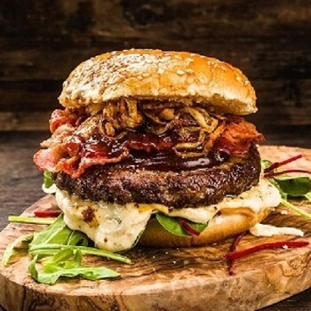
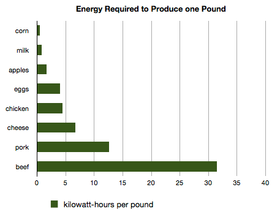

|
|
VS |

|
See any big difference?
Both tastes good and looks same. But there is a huge difference behind the scene.
A single-plate of beef causes five times more greenhouse gas emissions than one plate of any vegan dish.
Beef requires 28 times more land, six times more fertilizer and 11 times more water compared to those other food sources. That adds up to about five times more greenhouse gas emissions. Greenhouse gas emission is one of the primary reasons for the global warming. Globally, 14.5% of all greenhouse gas pollution can be attributed to livestock, according to the U.N. Food and Agriculture Organization, the most reputable authority on this topic. And a huge hunk of the livestock industry's role -- 65% -- comes from raising beef and dairy cattle.
"0.61 pounds of the beef serving equals burning enough fuel to drive an average American car 70 miles, or 113 kilometers." By John D. Sutter, CNN, Nov 24 2015